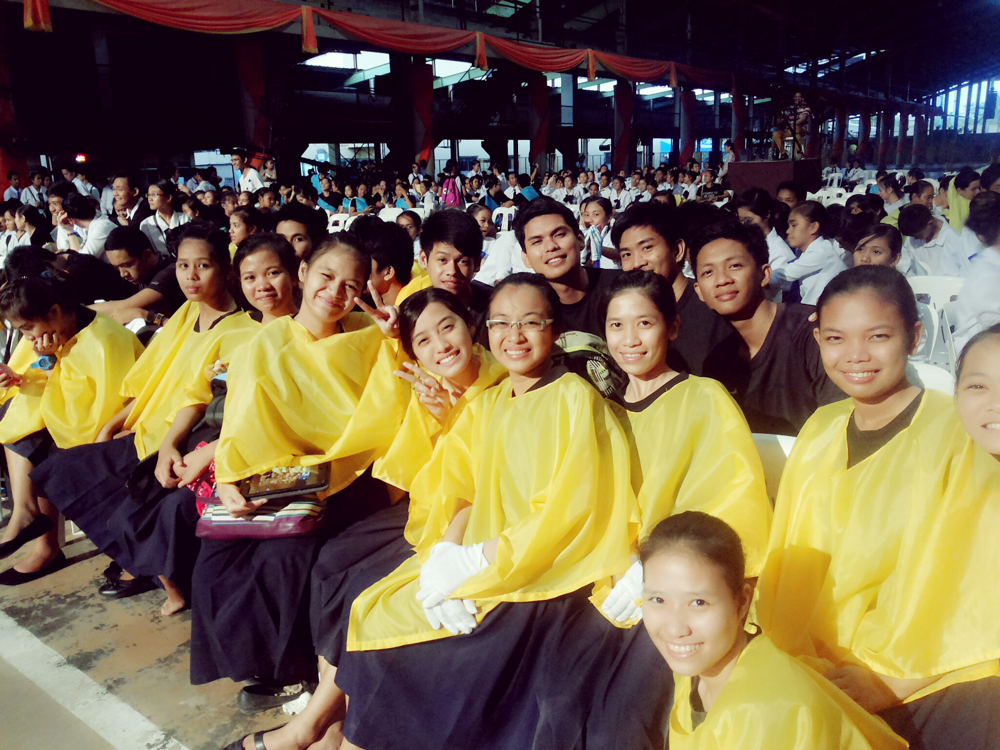
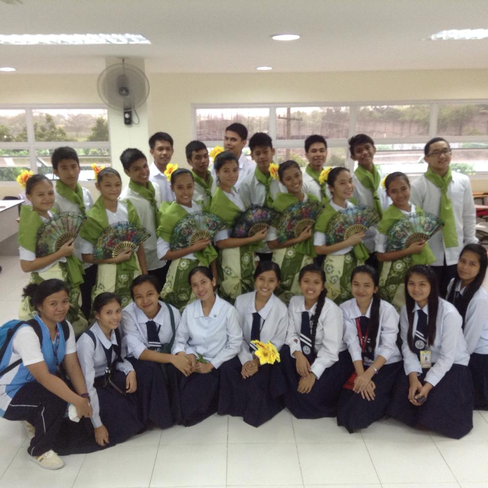
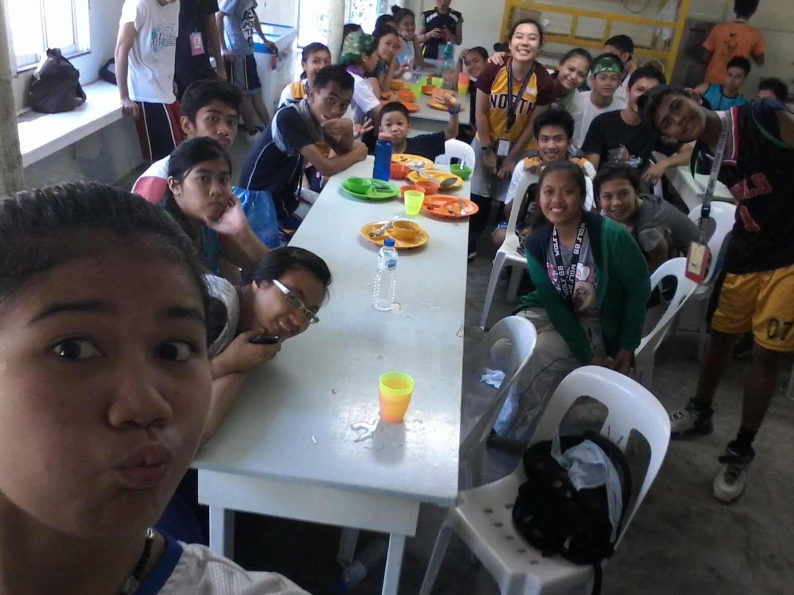

There are many valuable things in life, but friendship may be one of the most important. To live life without the experience of friendship, is life without living. Human interaction is a necessity to survival, but developed friendships are essential to the successful well being of anyone. Based upon Webster's Dictionary, the definition of a friend is, "A person whom one knows, likes and trusts." But to all, Friendship has no defined terminology. The definition of a friend, and friendship, is based upon one's own notions.
We spend a lot of time together doing our projects, homework and going on school excursions. It is no wonder that some of my best of friends are my classmates
I would generally describe my class as a mirthful bunch. Of course, there are several quiet classmates like Jen and Amy, who prefer to keep to themselves than join in our boisterous behaviour when the teacher is not in class. I sometimes wonder how they are able to block out the noise because we can be most annoying during those times.
The thing I admire most about my class is our ability to work harmoniously together. Cooperation is one of our strongest points as a class just like what we did last English Month Culminating activity. Our classmates who participated individually, in turn, got fired up by our constant cheering and encouragement and do better in their events. As a result, our class bond much more .


